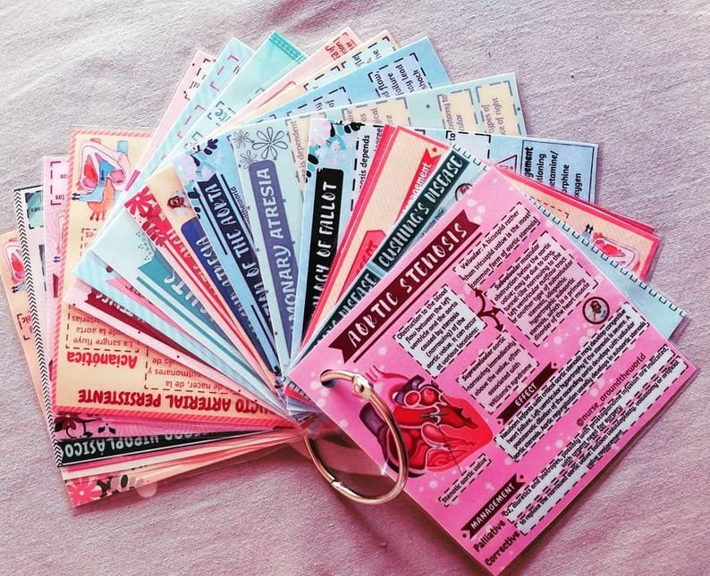
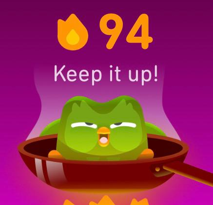

Meus projetos
Voando além do mapa: uma jornada intercultural
Este é um projeto interdisciplinar de intercâmbio, com foco cultura. Apresentado de forma recreativa, como uma palestra interativa e uma mostra cultural, com o objetivo de incentivar a curiosidade sobre outras culturas e colocar um fim nos estigmas sobre a cultura australiana.

Página web: desenvolvendo uma ferramenta de estudo
Este projeto é uma ferramenta de estudos interativa, com flashcards sobre matérias diversas, com as peguntas na frente e as respostas no verso.

Duolingo: aprendendo frances sem sair de casa
Este é um projeto pessoal de aprender frances de maneira online sozinha, estabelecendo metas e mantendo as aulas de 15 minutos todos os dias por 94 dias sem pausas, espero conquistar mais dias de streak no duolingo.